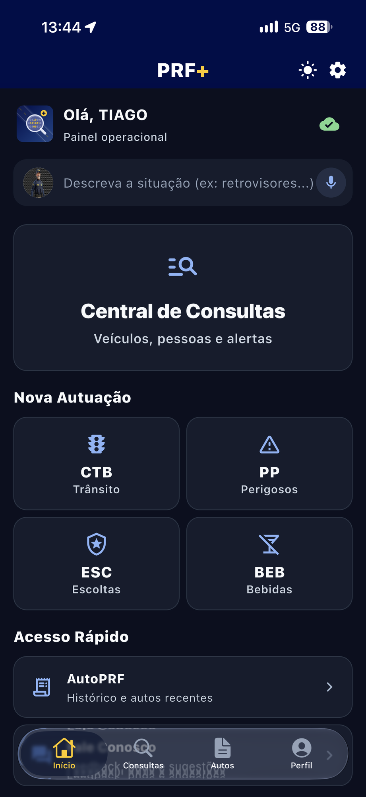
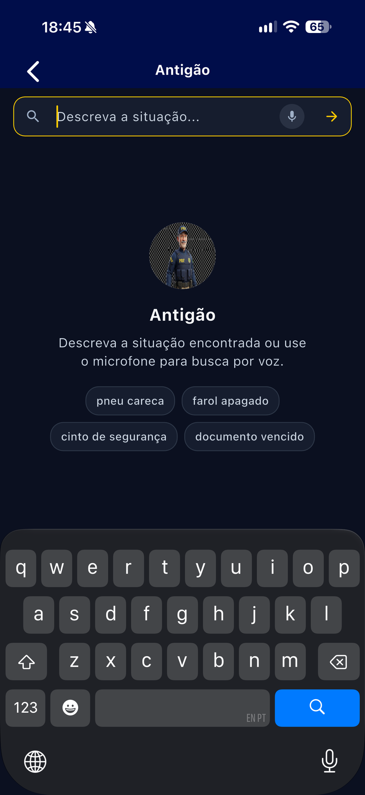
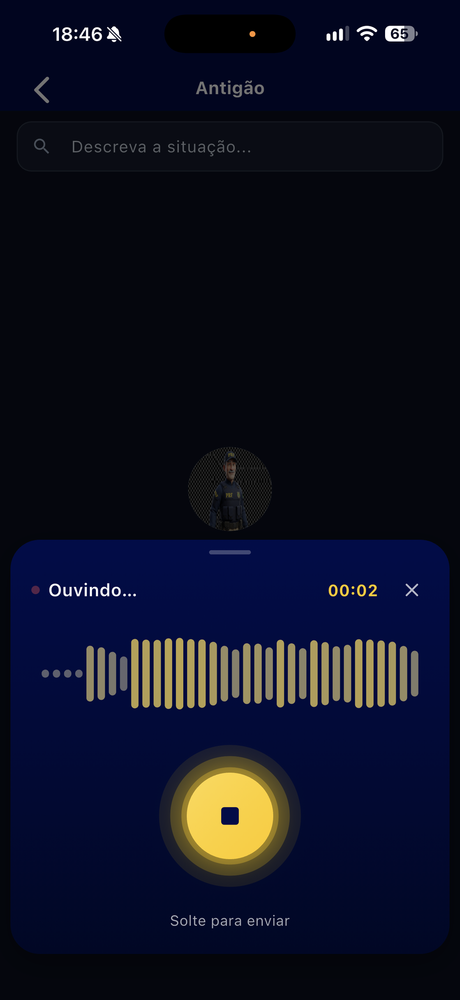
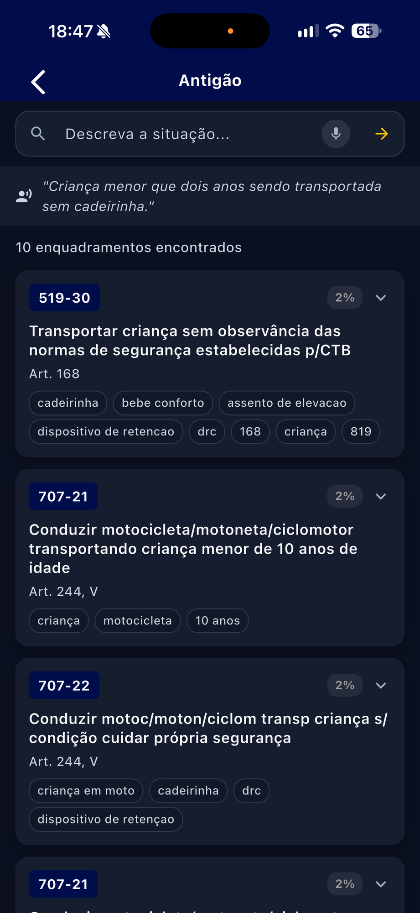
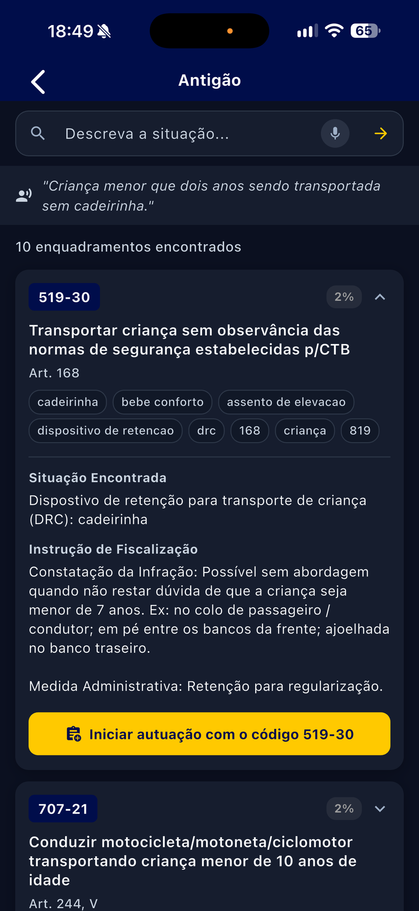

É a maior modernização tecnológica da atividade-fim da PRF na última década.
Todos os dias
13.000
policiais dependem de um aplicativo para trabalhar. Consultas, abordagens, autuações. Na estrada. Agora.
O ponto de partida
Um cenário que pedia evolução.
O PRF Móvel, desenvolvido e mantido pela própria PRF, sustenta a operação há anos. A demanda cresceu — e, com ela, a necessidade de evoluir a plataforma.
Só AndroidNenhuma versão para iOS. Pouca flexibilidade de dispositivos.
Observabilidade limitadaFalhas eram difíceis de detectar em tempo real.
AuditoriaTrilhas de ações sensíveis podiam ser mais completas.
Então tomamos uma decisão: assumir.
Internalizamos o projeto que deu origem ao PRF+ — iniciado em parceria entre o Instituto Federal do Ceará — IFCE — e a PRF. Adquirimos domínio sobre arquitetura e operação. E o reestruturamos — do nosso jeito.
A jornada
De projeto em parceria a plataforma soberana.
Origem
Parceria IFCE + PRF
Projeto nascido em parceria, sobre uma base tecnicamente bem construída, na nuvem externa.
Internalização
Domínio da solução
Compreensão profunda de componentes e fluxos, com reescrita de grande parte da solução.
Migração
Data center PRF
Saída da nuvem externa. Economia direta e soberania sobre dados policiais.
Reestruturação
Plataforma moderna
App multiplataforma, serviços independentes e entrega contínua.
Hoje
PRF+
Equipe mista, documentação como pré-requisito, review IA + humano, entregas semanais.
Apresentando
PRF+

Cinco pilares. Um propósito.
ConfiávelFontes autoritativas, em tempo real, com degradação graciosa.
MultiplataformaAndroid e iOS a partir de uma única base de código.
Offline-firstO policial não fica refém de cobertura móvel.
InteligenteIA embarcada auxiliando a decisão em campo.
AuditávelToda ação relevante em trilha imutável.
Pela primeira vez
Android e iOS.
Uma única base de código Flutter. Paridade total entre plataformas. Liberdade para padronizar os dispositivos institucionais.
Disponível naApp StoreDisponível noGoogle Play
Feito para a estrada
Sem sinal? Sem problema.
Offline-first por design. Capturas, consultas em cache e eventos ficam armazenados no dispositivo — e sincronizam sozinhos quando a rede volta.
Consulta de Pessoa V3
Fontes de dados
consultadas em paralelo, em uma única requisição. Entre elas:
Motor PESSOA
BNMPMandados de prisão
RENACHCNH e condutores
Motor VEÍCULOS
Motor REGISTROS
Sinal Desaparecidos
…e outras fontes integradas à plataforma.
AutoPRF v2
O talão eletrônico, reinventado.
Lavratura completaAuto de infração CTB e medições, de ponta a ponta no app.
Impressão em campoIntegração com impressoras térmicas Zebra. Documento entregue na hora.
Rumo à SENATRANEm homologação junto à área negocial para certificação nacional.
Inteligência artificial
IA que trabalha dentro da viatura.
OCR de placasLeitura automática de placas no próprio dispositivo. Sem depender de rede.
Reconhecimento facialApoio à identificação em abordagens, processado no próprio aparelho.
Fiscalização com abordagem
Um fluxo único. Tudo conectado.
Pessoa, veículo, veículos atrelados, fotos e GPS — integrados em uma só operação, com armazenamento offline.
Para a gestão
Visibilidade total do que acontece em campo.
Gestão de usuários e perfis com inbox de aprovação
Indicadores agregados de operação disponibilidade e uso, sem identificação individual
Dashboards operacionais consolidados
Feature flags ativação controlada por perfil e ambiente
E por baixo disso tudo, uma nova arquitetura.
Backend
19
microsserviços independentes. Escaláveis por demanda. Uma plataforma que cresce junto com a instituição.
Tecnologia
Moderno de ponta a ponta.
AplicativoMultiplataforma, com arquitetura limpa e funcionamento offline
Plataforma de serviçosEscalável, segura e integrada às bases institucionais
Painel de gestãoAdministração moderna, preparada para evolução contínua
Infraestrutura
Dados policiais, em casa.
Infraestrutura no data center da própria PRF. Soberania sobre os dados, mais governança e controle sobre a solução — e economia direta com a redução de infraestrutura externa contratada.
Esteira DevOps
Do commit à pista, sem intervenção manual.
Entrega automatizadaDo repositório à produção, sem passos manuais
Segurança contínuaAnálise automática de vulnerabilidades em cada versão
Rastreabilidade totalDo planejamento à entrega em produção
CI/CDCiclo contínuo de integração e entrega
Qualidade de código
Review híbrido: IA + humano.
GitHub Copilot revisa cada pull request com instruções customizadas. Depois, revisão humana obrigatória antes de qualquer merge. Nada entra em produção sem passar pelos dois.
Impessoalidade por design
Documentação primeiro. Código depois.
SDDSolution Design: arquitetura, contratos de API, modelo de dados, rollout
GDDGranular Design: tasks atômicas com critérios de aceite objetivos
ADRsDecisões arquiteturais registradas com contexto e alternativas
O conhecimento pertence à instituição — não a pessoas.
Segurança e auditoria
Cada ação, gravada para sempre.
Hash chainTrilha de auditoria imutável e verificável, com acesso restrito por papel
SouGov + PRF SegurançaAutenticação institucional federada, com sessões de curta duração e compatibilidade preservada
LGPD nativaRetenção controlada e expurgo automático de dados sensíveis
Observabilidade ponta a ponta
Se algo falhar, nós sabemos primeiro.
Erros, logs e métricas centralizados — do app na estrada ao pod no cluster. Runbooks prontos para cada alerta crítico. O fim da era em que o policial descobria o problema antes da TI.
Legado vsPRF+
Cenário anterior
Android, plataforma única
Infraestrutura em nuvem externa
Observabilidade limitada
Auditoria limitada
Evoluções mais lentas e acopladas
PRF+
Android + iOS, base única
Serviços independentes e escaláveis
Data center da própria PRF
Observabilidade ponta a ponta
Trilha de auditoria imutável
Entregas contínuas e documentadas
O projeto em números
36%de economia em horas de desenvolvimento vs. manter sistemas separados
11.280hde esforço estimado nas fases 0 a 2
99%+de disponibilidade como critério de aceitação
< 3sde resposta em operações críticas
100%de paridade funcional com o legado
85+sistemas e APIs integrados
11frentes ativas de remediação de segurança
13.000policiais no go-live total
O caminho até dezembro
Rollout controlado.
18 · AGO · 2026
Apresentação
O PRF+ é apresentado ao público. Hoje.
SET 2026
Projeto Piloto
20 agentes em unidade selecionada, validação real de campo.
SET – OUT 2026
Rollout gradual
Liberação controlada por lotes regionais.
DEZ 2026
Lançamento
Versão de produção para 100% dos 13.000 servidores.
2027+
Fase 3
Realidade aumentada, comando de voz, IA avançada.
Quem constrói
Feito pela PRF, para a PRF.
Equipe mista — policiais desenvolvedores e fábrica de software — com transferência efetiva de conhecimento para o corpo institucional. DTIC/DIAP · DISTI Segurança · DISTI Infraestrutura · áreas negociais.
Isso não é o fim de um projeto.
É o começo de uma plataforma — a base sobre a qual as próximas ferramentas da atividade policial serão construídas.
One more thing.
Antigão
Demonstração

Prompt de voz

«Criança menor de dois anos sendo transportada sem cadeirinha.»
Um prompt de voz. Linguagem natural, do jeito que o policial fala na fiscalização.
Resultado
10 enquadramentos encontrados.


Inteligência normativa
Antigão
A IA que auxilia o policial no enquadramento legal da infração.
Enquadramento assistidoSugestão de norma aplicável no momento da autuação.
Menos tempo na normaA consulta que levava minutos acontece em segundos.
Mais segurança jurídicaAuto mais preciso, para o agente e para o cidadão.
PRF+
Dezembro de 2026.
Na palma da mão de quem protege a estrada.
Obrigado.
Tiago Sousa Amorim
Policial Rodoviário Federal Gerente do Projeto PRF+